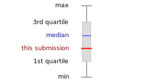
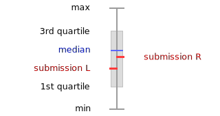

Legend
This is a
box-and-whisker plot
of a submission. The values for this submission are plotted
against aggregate data for other submissions of the
same survey.

Each column shows eight pieces of information:
This is a
box and whisker plot
of two submissions. The values are plotted
against aggregate data for other submissions of the
same survey(s).

Each column relates to a single sub-category of the current category.
The left side of the column shows the values for the first submission
(L) while the right side shows the values of the second
submission (R).
Each side of the column shows eight pieces of information:
- Submission value
-
The actual score for the sub-category of the selected
submission.
This is the
red line.
- Upper bound
-
The maximum possible score for the sub-category of the
survey. This is shown as the line at the top of
the chart.
- Max
-
The actual
maximum
score for the sub-category of
all submissions across all organisations. 100% of
all submissions have a score less than or equal to this
value.
This is the
top whisker.
- 3rd quartile
-
The third
quartile;
75% of all submissions have a score less than or equal to
this value.
This is the top of the box.
- Median
-
The second quartile.
50% of all submissions have a score less than or equal to
the median.
This is the
blue line.
- 1st quartile
-
The first quartile.
25% of all submissions have a score less than or equal to
this value.
This is the bottom of the box.
- Min
-
The actual
minimum
score for the sub-category of the
all submissions across all organisations. 0% of
all submissions have a score less than or equal to this
value.
bottom whisker.
- Lower bound
-
The minimum possible score for the sub-category of the
survey. This is shown as the line at the bottom of
the chart.